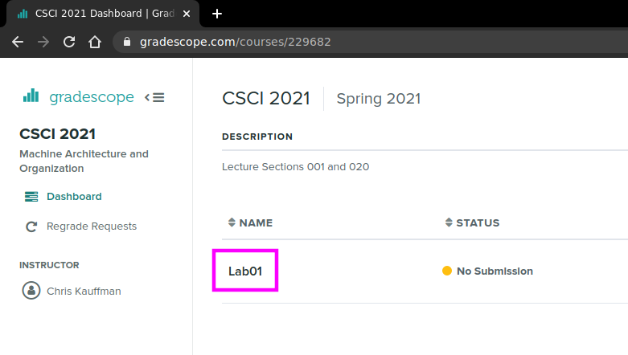

CMSC216 Lab01: Coding Setup and Conventions
- Due: 11:59pm Sun 01-Feb-2026 on Gradescope
- Approximately 1.00% of total grade
CODE DISTRIBUTION: lab01-code.zip
- Download the code distribution
- See further setup instructions below
Walkthrough Video: https://umd.instructure.com/courses/1398391/pages/week-01-videos
CHANGELOG:
- Wed Jan 28 04:08:04 PM EST 2026
Post 21 identified and resolved an issue with using
make submitto submit Lab01. Incorrect Gradescope information was present in the original version of the Makefile. If students get an error likerequests.exceptions.HTTPError: 401 Client Error: Unauthorized for url ...
check that the
Makefilenear the top for the following two variables which originally had incorrect numbers in them:GS_COURSE_ID = 1239298 # this is the correct course id GS_ASSIGN_ID = 7534788 # this is the correct assignment id
Make changes according to the correct numbers shown above and try
make submitagain.I'll be adjusting all future labs so that this problem is not likely to occur. Thanks to the students that reported and resolved this.
- Wed Jan 28 11:17:29 AM EST 2026
- A walk through video for Lab01 has been posted based on the Optional Discussion Zoom Meeting that took place today 10-11am. Thanks to the students and TAs who attended to give input. The video is here: https://umd.instructure.com/courses/1398391/pages/week-01-videos
1 Rationale
This exercise will introduce students to the basic UNIX programming environment which will be used throughout the course and the general infrastructure used to create C programs, evaluate them, and submit them for credit. Staff will be on hand in discussion to help students set up their environment and get started on the exercise.
Associated Reading
Steps to set up your coding environment are in the CMSC216 Coding Environment Setup Guide.
Grading Policy
Credit for this lab is earned by completing the code/answers in the
Lab codepack and submitting a Zip of the work to Gradescope preferably
via running make submit. Students are responsible to check that the
results produced locally are reflected on Gradescope after submitting
their completed Zip.
Lab Exercises are Free Collaboration and students are encouraged to cooperate on labs. Students may submit work as groups of up to 5 to Gradescope: one person submits then adds the names of their group members to the submission.
No late submissions are accepted for Lab work but the lowest two lab scores for the semester will be dropped including zeros due to missing submissions. See the full policies in the course syllabus.
2 Codepack
The codepack for these exercises is linked at the top of this document. Always download it and unzip/unpack it. It should contain the following files which are briefly described.
| File | Use | Description |
|---|---|---|
QUESTIONS.txt |
EDIT | Questions to answer: fill in the multiple choice selections in this file. |
hello_c.c |
EDIT | C file to; edit it to complete for testing |
QUESTIONS.txt.bk |
Backup | Backup copy of the original file to help revert if needed |
Makefile |
Build | Enables make test and make zip, try make help to see other features |
test-lab01.org |
Testing | Automated tests for these exercises |
test_quiz_filter |
Testing | Filter to extract answers from Questions file, used in testing |
testy |
Testing | Test running scripts |
gradescope-submit |
Misc | Allows submission to Gradescope from the command line |
3 Programming Environment Setup
The course will require you to do some programming in a UNIX/Linux environment and the course staff have prepared a guide to getting access to such an environment here:
This guide outlines necessary software to access a UNIX/Linux environment, primarily through remote login to UMD's Zaratan server though there are other options. Lab staff will walk through the necessary software to install and demonstrate how to access the Zaratan server as well as assist students in completing the lab work.
4 Overview of Lab Exercises
- During discussion, staff will walk students through some of instructions in below and then provide time to complete the exercise. This may be done individually or in groups.
- You are NOT required to work in a group but many students find it helpful to form some connections and maintain them throughout the semester. Discussion sections are a place you might do that. Take this as an opportunity to meet some classmates: having a community of support makes any class easier to handle.
- If at any point you become confused by what to do next ask for help from your classmates or course staff.
Download the
lab01-code.zipfile linked at the top of this document into your Unix environment and unzip it. In most UNIX environments you can use the terminal command>> unzip lab01-code.zip
to accomplish this. A number of files will be created in a the new folder
lab01-code/.- Find and open the
QUESTIONS.txtfile in a text editor which contains further instructions on what to do. There are several asks to play with basic UNIX commands. Execute the commands indicated and observer their results. Some parts of the text file are marked with
QUESTIONand have multiple choices. Mark the correct response as follows:QUESTION: Which of these is correct? - ( ) This is a wrong answer - ( ) This is also wrong - (X) This is the correct answer - ( ) And another wrong answer
When you have filled in all your QUIZ answers, check them via the provided
makecommand. In a terminal, type the command>> make test-quiz
which checks the quiz questions for correctness. QUIZ Correctness is "all or nothing" : if any errors exist, no credit is earned and you will need to review all answers to figure out which ones are problematic. Fully correct answers give an "OK" for full credit.
Some activities will be based on writing CODE and marked as such. These will involve editing a file like the provided
hello.cto complete it. Once you have completed the code necessary check it via a terminal using the command>> make test-code
You can run tests for both the QUIZ and CODE sections with
>> make test
which you should always do prior to submitting
When you complete the QUIZ and CODE questions, the code needs to be submitted to Gradescope. This can be done with the command line
>> make submit
Alternatively, students can create a zip of their work via
>> make zip
then transfer the zip to their laptop and it to Gradscope via a web browser. Submission is covered towards the end of this document with commands and a visual reference.
5 QUESTIONS.txt File Contents
Below are the contents of the QUESTIONS.txt file for these exercises.
Follow the instructions in it to complete the QUIZ and CODE questions.
_________________
LAB01 QUESTIONS
_________________
Exercise Instructions
=====================
Follow the instructions below to experiment with topics related to
this exercise.
- For sections marked QUIZ, fill in an (X) for the appropriate
response in this file. Use the command `make test-quiz' to see if
all of your answers are correct.
- For sections marked CODE, complete the code indicated. Use the
command `make test-code' to check if your code is complete.
- DO NOT CHANGE any parts of this file except the QUIZ sections as it
may interfere with the tests otherwise.
- If your `QUESTIONS.txt' file seems corrupted, restore it by copying
over the `QUESTIONS.txt.bk' backup file.
- When you complete the exercises, check your answers with `make test'
and if all is well, create a zip file with `make zip' and upload it
to Gradescope. Ensure that the Autograder there reflects your local
results.
- IF YOU WORK IN A GROUP only one member needs to submit and then add
the names of their group.
Follow the instructions below. For sections marked QUIZ, mark one of
the multiple choices with an X.
Unix Terminal Basics
====================
Explore the UNIX terminal a bit. Ask for help from a classmate or
Staff member if you don't know how to open a terminal on your system.
Type the below commands in and then indicate what their purpose is.
QUIZ Logging Into Zaratan
~~~~~~~~~~~~~~~~~~~~~~~~~
All recent major platforms (Windows / Mac / Linux) come with the `ssh
/ scp' tools pre-installed.
What does the following command do?
,----
| > ssh kauf0095@zaratan.umd.edu
`----
- ( ) Silences the user `kauf0095' on the machine `zaratan' so that
user can no longer type any commands and must reset their password.
- ( ) Opens an unsecure connection to the machine `zaratan' for the
user `kauf0095' and allows anyone typing to the command to act as
that user on `zaratan' without password verification and without any
encryption of the connection.
- ( ) Opens a secure connection to the machine `zaratan' for the user
`kauf0095' and, after verifying a password/2-factor authentication,
opens a terminal/shell on that machine for further commands.
When `ssh' prompts for your password and you start typing, what do you
see?
- ( ) Nothing: even while you type the password remains blank
- ( ) Those little dots to show how many characters have been typed
- ( ) Your password, duh!
If you type your password in wrong during an `ssh' connection to
Zaratan, what happens?
- ( ) You log in anyway, the passwords are a lie!
- ( ) You get a prompt that says "Password Incorrect" and you have to
try again
- ( ) A Duo Two-Factor authentication happens like everything is cool
BUT after that, the password prompt re-appears
- ( ) The connection is immediately terminated and you have to type
`ssh' again
QUIZ Transferring Code To/From Zaratan
~~~~~~~~~~~~~~~~~~~~~~~~~~~~~~~~~~~~~~
Which of the following is a viable way to get a codepack like
`lab01-code.zip' onto Zaratan?
- ( ) Use a graphical file transfer program like the SFTP extension
for VS Code to move files to Zaratan from the local machine; doing a
"Sync Local -> Remote" will move files from a laptop to Zaratan
- ( ) On Zaratan, use `wget' to download the code directly from a web
address
- ( ) Download the code to your laptop and use `scp' to transfer the
codepack from the laptop to Zaratan
- ( ) All of these are possible BUT using `wget' is usually the
quickest way to initially get a codepack to Zaratan from the web.
Which of the following is a viable way to move code from Zaratan to
your Laptop so you can retain a copy of your code?
- ( ) SFTP via an extension like the on in VS Code: doing a "Sync
Remote -> Local" will move files from Zaratan to your Laptop
- ( ) The right invocation of `scp' (secure copy) will move files from
Zaratan to a laptop
- ( ) `wget' will move files from Zaratan to your laptop
- ( ) SFTP or `scp' will work but `wget' won't in this case: Zaratan
is not a public server and requires Secure authentication
QUIZ UNIX Command Basics
~~~~~~~~~~~~~~~~~~~~~~~~
What does the following command sequence do?
,----
| > cd ~ # 1
| > mkdir cmsc216 # 2
| > cd cmsc216 # 3
| > ls # 4
| > cd .. # 5
`----
,----
| - ( ) 1. Changes to your home directory/folder
| 2. Creates a folder named cmsc216
| 3. Changes the directory cmsc216 to be your home folder
| 4. lists the files in the current folder,
| 5. changes the directory .. to be your home folder
|
| - ( ) 1. Creates a directory/folder named ~ (tilde)
| 2. creates a file named cmsc216,
| 3. creates a second folder cmsc216,
| 4. lists the files in the current folder,
| 5. moves up one folder
|
| - ( ) 1. Changes to your home directory/folder,
| 2. creates a folder named cmsc216
| 3. changes into the folder cmsc216,
| 4. lists the files in the current folder,
| 5. moves up one folder
`----
Submitting Code to Gradescope
~~~~~~~~~~~~~~~~~~~~~~~~~~~~~
When you have completed the lab, passed all the automated tests, which
of the following mechanisms can be used to submit code to Gradescope
for credit.
Select ALL options that apply
- ( ) Run the command `git commit' and type a commit message and then
`git push' which will upload to Github which will talk to Gradescope
to do the submission.
- ( ) Run the command `make zip' to create `lab01-complete.zip',
transfer that file to Gradescope, use a web browser to log into
Gradescope and upload the zip file for the assignment.
- ( ) Type `make submit' which will create the zip file and transfer
it to Gradescope after prompting for your email/password.
- ( ) Run the command `submit' which will cause the Submit server on
Zaratan to evaluate the code for credit.
Checking Your Quiz Answers
==========================
To check if your quiz answers are correct, open a terminal and change
into the `lab01-code' directory. Type the command
,----
| > make test-quiz
`----
which will report either success or a failure. The test does not
report WHICH questions are incorrect and if you get stuck, get some
help from a staff member to sort out which of the multiple choice
questions above is incorrect.
CODE in hello_c.c
=================
Open up and examine the file `hello_c.c'. This is a C program and to
see what it in action, you will need to compile and run it in a
terminal. Navigate your terminal to the `lab01-code' directory. You
can use the provided build tools to create the C program by typing
,----
| > make
`----
This should provide output which runs the `gcc' compiler and creates
the runnable program `hello_c': notices the lack of the `.c'
extension. A session of compiling, running, and testing the program is
below with commentary on the right.
,----
| >> make # compile the program 'hello_c'
| gcc -Wall -Wno-comment -Werror -g -o hello_c hello_c.c
|
| >> file hello_c # check file type of program
| hello_c: ELF 64-bit LSB pie executable, x86-64, version
|
| >> ./hello_c # run compiled program
| Goodbye Python. Goodbye Java.
| ...
|
| >> make test-code
| ./testy test_lab01.org 2
| ============================================================
| == test_lab01.org : Lab01 Tests
| == Running 1 / 2 tests
| 2) CODE: hello_c output : FAIL -> results in file 'test-results/lab01-02-result.tmp'
| ============================================================
| RESULTS: 0.00 / 1.00 tests passed
|
|
| ============================================================
| == FAILURE RESULTS
| ============================================================
| (TEST 2) CODE: hello_c output
| COMMENTS:
| Runs the program 'hello_c' which must already be compiled and checks
| ...
`----
As indicated in the comments in `hello_c.c', there are a number of
typos, missing, and extraneous lines printed by the program. To make
the code pass the tests, you will simply need to correct `hello_c.c'
to match the output expected for the test. As the Comments for the
CODE test indicate, failures report differences between the expected
and actual output with symbols between the side-by-side
comparison. These symbols are those used by the comparison program
`diff' and are as follows:
,----
| > means there is an extra ACTUAL line that doesn't match anything in EXPECT
| < means there is a line missing in ACTUAL that is present in EXPECT
| | means the lines match closely but some characters differ
`----
Edit code in `hello_c.c' so that the output matches and testing the
code produces a success:
,----
| > make test-code
| gcc -Wall -Wno-comment -Werror -g -o hello_c hello_c.c
| ./testy test_lab01.org 2
| ============================================================
| == test_lab01.org : Lab01 Tests
| == Running 1 / 2 tests
| 2) CODE: hello_c output : ok
| ============================================================
| RESULTS: 1.00 / 1.00 tests passed
`----
Submitting a Zip to Gradescope
==============================
Once you have your QUIZ answers for the `QUESTIONS.txt' file correct
and your CODE completed, do one final check via `make test':
,----
| > make test
| ./testy test_lab01.org
| ============================================================
| == test_lab01.org : Lab01 Tests
| == Running 2 / 2 tests
| 1) QUIZ: QUESTIONS.txt : ok
| 2) CODE: hello_c output : ok
| ============================================================
| RESULTS: 1.00 / 1.00 tests passed
`----
If everything looks ok, you are ready to submit. Do so by creating a
zip file via `make zip'
,----
| > make zip
| rm -f hello_c *.o
| rm -rf test-results
| rm -f lab01-complete.zip
| cd .. && zip "lab01-code/lab01-complete.zip" -r "lab01-code"
| adding: lab01-code/ (stored 0%)
| adding: lab01-code/QUESTIONS.md5 (stored 0%)
| adding: lab01-code/QUESTIONS.txt (deflated 61%)
| adding: lab01-code/QUESTIONS.txt.bk (deflated 61%)
| adding: lab01-code/testy (deflated 73%)
| adding: lab01-code/hello_c.c (deflated 51%)
| adding: lab01-code/Makefile (deflated 60%)
| adding: lab01-code/test_lab01.org (deflated 47%)
| Zip created in lab01-complete.zip
`----
The zip file named `lab01-complete.zip' should be uploaded to
Gradescope under the Lab01 assignment. Once uploaded, the same `make
test' check will be run and you should verify its success as this will
earn you your lab Engagement Point (1% of your overall grade).
IF YOU ARE WORKING IN A GROUP: only one student needs to upload the
Zip file and can add up to 4 other students (groups of 5) to the
submission who will also receive credit for the lab work.
6 Submission
6.1 Check via make test
Once you have your QUIZ answers for the QUESTIONS.txt file correct
and your CODE completed, do one final check via make test and verify
that everything passes.
>> make test ./testy test_lab01.org ============================================================ == test_lab01.org : LAB01 Tests == Running 2 / 2 tests 1) QUIZ: QUESTIONS.txt : ok 2) CODE: hello_c output : ok ============================================================ RESULTS: 1.00 / 1.00 tests passed
6.2 Submission Policies
- Make sure to check that your submission passes tests on Gradescope as if they don't,you'll lose out on lab credit. Check error output on Gradescope if something goes wrong and either resubmit or contact the staff.
- It is intended that tests run the same on Zaratan and Gradescope. There are no hidden / secret / semi-public / semi-private / suffering-through-withholding-information tests. Everything is public.
- If you see a consistent discrepancy between results on Zaratan and
Gradescope, contact Prof Kauffman
<profk@umd.edu>and he'll look into it. Before contacting any staff, look at the error output on Gradescope's website and describe / show what you see when broaching the issue with staff. - Students are responsible for verifying Autograder results match behavior on Zaratan, making efforts to fix submissions, and contacting staff about Autograder problems. Past students have asked a week later to resubmit because they did not verify their code passed the autograder tests when the submitted but have all been refused.
- You can resubmit as many times as you wish up to the assignment deadline, usually 11:59pm on the due date. It's a good idea to submit something a bit early even if it isn't completely finished as this will avoid missing deadlines entirely.
- No late submission are accepted for Labs. Projects may be submitted up to two days late at the cost Engagement Point per day late.
There are two methods to submit to Gradescope for credit.
- Recommended: Submit from the command line via
make submit - Submit via uploading a Zip to Gradescope
These are described below.
- Recommended: Submit from the command line via
- Lab work may be done collaboratively and students can make a single submission in a group of up to 5. Instructions on adding group members appears near the end of this document.
6.3 Submitting via the Command Line (RECOMMENDED)
Labs and Projects can be submitted to Gradescope via the command line using the command:
>> make submit
This will create a lab01-complete.zip Zip file and upload it to
Gradescope using the gradescope-submit script. After uploading the
code, a brief version of the Autograder results will be shown for the
test cases which should be checked to ensure that they match
expectations. The tests that run on Gradescope are identical to those
that run normally via make test (no hidden / secret tests) and it is
intended that test results on Zaratan match those on Gradescope (though
occasional discrepancies arise).
Students are responsible for verifying Autograder results match behavior on Zaratan, making efforts to fix submissions, and contacting staff about Autograder problems. If things don't look right in the terminal, pop open a web browser and check the Autograder output via the "submission link" that is printed during the submission (or just navigate to the assignment on Gradescope).
Below is a transcript of a successful submission via make submit.
>> make submit # submit assignment to gradescope rm -f hello_c *.o # removes build and test files first rm -rf test-results rm -f lab01-complete.zip cd .. && zip "solution-lab01-216/lab01-complete.zip" -r "solution-lab01-216" adding: solution-lab01-216/ (stored 0%) adding: solution-lab01-216/testy (deflated 74%) adding: solution-lab01-216/hello_c.c (deflated 53%) adding: solution-lab01-216/Makefile (deflated 60%) adding: solution-lab01-216/hello_c.c.bad (deflated 52%) adding: solution-lab01-216/test_lab01.org (deflated 46%) Zip created in lab01-complete.zip # zip file which will be sent; also used in manual submission === SUBMITTING TO GRADESCOPE === # script gradescope-submit used to upload to gradescope ./gradescope-submit 1098877 6586882 lab01-complete.zip Submitting zipfile lab01-complete.zip with 21 files ==Gradscope Login Credentials== email: kauf0095@umd.edu password: .......... Contacting Gradescope - https://www.gradescope.com OK (200) - https://www.gradescope.com/login OK (200) - https://www.gradescope.com/courses/1098877/assignments/6586882 OK (200) - https://www.gradescope.com/courses/1098877/assignments/6586882/submissions OK (200) - https://www.gradescope.com/courses/1098877/assignments/6586882/submissions/341944413 submission link Submit Successful # copy this link to view submission in a browser Monitoring Autograder Progress - unprocessed - autograder_task_started - autograder_harness_started - processed Autograder Results - Lab Tests: 1.0 / 1.0 # autograder indicates all tests passed
6.4 Creating a Zip and Submitting Manually
Submitting via the command line is faster and more reliable than the method described here. Use manual submission only as a last resort.
If submission from the command line fails for some reason, students
can also submit their completed zip file manually via a web
browser. Create a zip file via make zip.
>> make zip rm -f hello_c *.o rm -rf test-results rm -f lab01-complete.zip cd .. && zip "lab01-code/lab01-complete.zip" -r "lab01-code" adding: lab01-code/ (stored 0%) adding: lab01-code/QUESTIONS.md5 (stored 0%) adding: lab01-code/QUESTIONS.txt (deflated 61%) adding: lab01-code/QUESTIONS.txt.bk (deflated 61%) adding: lab01-code/testy (deflated 73%) adding: lab01-code/hello_c.c (deflated 51%) adding: lab01-code/Makefile (deflated 60%) adding: lab01-code/test_lab01.org (deflated 47%) Zip created in lab01-complete.zip
Then transfer the zip file lab01-complete.zip to the local machine
(laptop) and upload it to Gradescope under the Lab01
assignment. Make sure to wait around to see the Autograder results
as if something goes wrong, students will want to address it to secure
their lab credit (about 1% of their overall grade).
The following pictures illustrate how to submit the code via the web browser; the names will vary a bit as the pictures are associated with a different course that occurred a long, long time ago in a university far, far away. However, likely most students will get the gist of uploading a zip.



6.5 Adding Group Members
IF YOU ARE WORKING IN A GROUP: only one student needs to upload the Zip file and can add up to 4 other students (groups of 5) to the submission who will also receive credit for the lab work.
The following pictures show where you can add group members AFTER uploading a Zip file.